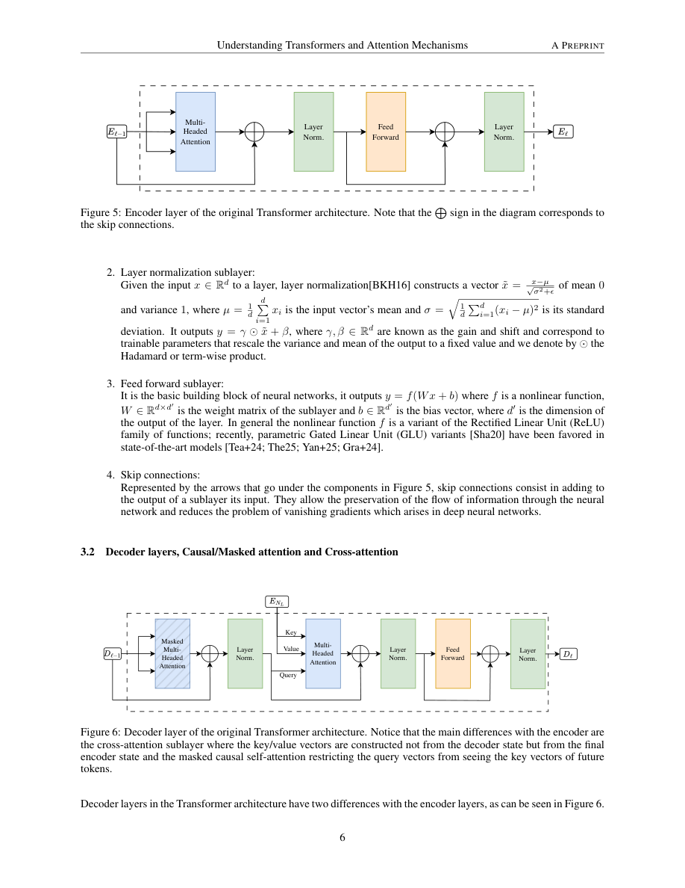

#1
★ 4/10
Understanding Transformers and Attention Mechanisms: An Introduction for Applied Mathematicians
理解Transformer与注意力机制：面向应用数学家的入门介绍

图 Figure · Page 6 of paper
🎯 面向应用数学家的Transformer与注意力机制系统入门教程
A mathematically-oriented tutorial on Transformers, attention, and modern efficiency techniques for the RNLA community.
| 维度 | 中文 | English |
|---|---|---|
| ❓ 待解决 的问题 |
应用数学领域的研究者通常缺乏了解现代大语言模型内部机制的入门渠道。注意力机制和Transformer架构的数学基础很少以数学家易于理解的方式呈现，这给跨学科合作（如将随机数值方法应用于Transformer）带来了障碍。 | Researchers in applied mathematics and numerical linear algebra often lack accessible entry points into the inner workings of modern large language models. The mathematical foundations of attention mechanisms, Transformer architectures, and their computational bottlenecks are rarely presented in a rigorous yet approachable way for non-ML specialists. This gap makes interdisciplinary collaboration—such as applying randomized numerical methods to Transformers—difficult to bootstrap. |
| 💡 解决 的亮点 |
• 以严谨且易懂的方式，从文本分词、向量嵌入到完整注意力机制流程逐步推导，适合数学背景读者。 • 从第一性原理推导多头注意力（MHA），与随机数值线性代数（RNLA）社区熟悉的线性代数概念紧密衔接。 • 在统一框架下系统介绍KV缓存、分组查询注意力（GQA）和潜在注意力等现代效率优化技术。 | • Provides a mathematically rigorous yet accessible walkthrough of text tokenization, vector embeddings, and the full attention mechanism pipeline. • Clearly derives Multi-Head Attention (MHA) from first principles, connecting it to linear algebra concepts familiar to the RNLA community. • Surveys modern efficiency techniques—KV caching, Grouped Query Attention (GQA), and Latent Attention—in a unified, structured framework suitable for mathematicians new to ML. |
| 🧪 实验 内容 |
本文为入门教程性质，未进行任何原始实验。文中不包含模型基准测试、数据集使用或基线方法对比，内容完全以概念阐述为主，旨在数学层面介绍相关知识而非实证验证。 | As an introductory tutorial paper, no original experiments were conducted. The document does not benchmark any models, use datasets, or compare baselines. Its content is entirely expository, aimed at mathematically introducing concepts rather than empirically validating them. |
| 📊 实验 结果 |
本文为教程文档，不含任何实验数字或基准测试结果。KV缓存、GQA和潜在注意力的效率提升均以定性方式描述：例如GQA将键值头数量从H减少到G（G < H），潜在注意力将KV表示压缩至维度远小于原始的潜在空间（d_c ≪ d_h × H）。 | No experimental results or benchmark figures are reported in this paper, as it is a tutorial document. Specific numerical comparisons of KV caching, GQA, or Latent Attention efficiency gains are described qualitatively rather than quantitatively—e.g., GQA reduces the number of key-value heads from H to G (G < H), and Latent Attention compresses KV representations into a lower-dimensional latent space of dimension d_c ≪ d_h × H. |
| 🏁 结论 | 本文为应用数学与现代深度学习之间架起了一座桥梁，提供了一份自洽且数学严谨的Transformer与注意力机制入门材料。其核心贡献在于为随机数值线性代数（RNLA）社区提供基础参考，助力将随机数值方法应用于Transformer模型组件的研究。 | This paper successfully bridges the gap between applied mathematics and modern deep learning by providing a self-contained, mathematically precise introduction to Transformers and attention mechanisms. Its primary contribution is serving as a foundational reference for the RNLA community to engage with and apply randomized numerical methods to Transformer model components. |
| 🔗 论文 链接 |
arXiv: 2604.00965v1 · 📥 PDF | |
⚙️ Method · 方法详解
本文采用教程式写作方式，从第一性原理逐步构建Transformer。从文本分词和向量空间嵌入出发，引入缩放点积注意力公式，解释其捕捉语义关系的机制；进而扩展到多头注意力，说明Transformer编码器/解码器模块的组装方式，并调研多种架构变体。最后介绍KV缓存（避免冗余计算）、分组查询注意力（降低内存开销）和潜在注意力（键值对的低秩压缩策略）。
The paper takes a tutorial approach, building up the Transformer from first principles. It starts with text tokenization and vector space embeddings, then introduces the scaled dot-product attention formula and its role in capturing semantic relationships. It extends this to Multi-Head Attention, explains how Transformer encoder/decoder blocks are assembled, and surveys architectural variants. Finally, it explains KV caching to avoid redundant computation, Grouped Query Attention to reduce memory overhead, and Latent Attention as a low-rank compression strategy for key-value pairs.
📐 Key Formulas · 关键公式
\[\text{Attention}(Q, K, V) = \text{softmax}\left(\frac{QK^\top}{\sqrt{d_k}}\right)V\]
💡 缩放点积注意力公式：查询矩阵Q与键矩阵K的点积除以维度平方根进行缩放，经softmax归一化后对值矩阵V加权求和，输出上下文感知的表示。
Scaled dot-product attention: the dot product of queries Q and keys K is scaled by the square root of key dimension d_k, normalized via softmax, then used to weight-sum the values V, producing context-aware representations.
\[\text{MultiHead}(Q, K, V) = \text{Concat}(\text{head}_1, \ldots, \text{head}_H)W^O, \quad \text{head}_i = \text{Attention}(QW_i^Q, KW_i^K, VW_i^V)\]
💡 多头注意力：将输入分别用H组不同的线性投影矩阵映射为查询、键、值，各头独立计算注意力后拼接，再通过输出投影矩阵W^O融合，允许模型同时关注多种语义关系。
Multi-Head Attention: input is projected H times with different learned matrices to form queries, keys, and values; each head independently computes attention, outputs are concatenated and linearly projected, allowing the model to jointly attend to information from multiple representation subspaces.
🌟 Why It Matters · 为什么重要
随着Transformer在各类AI任务中的核心地位日益突出，帮助数学家和数值分析学者深入理解其机制，有助于加速跨学科创新，例如基于随机低秩近似的注意力优化。本教程降低了RNLA及更广泛应用数学社区为大语言模型效率与可扩展性做出理论贡献的门槛。
As Transformers become central to AI across modalities, enabling mathematicians and numerical analysts to engage deeply with their mechanics accelerates interdisciplinary innovations—such as randomized low-rank approximations of attention. This tutorial lowers the barrier for the RNLA and broader applied math community to contribute theoretically grounded improvements to LLM efficiency and scalability.